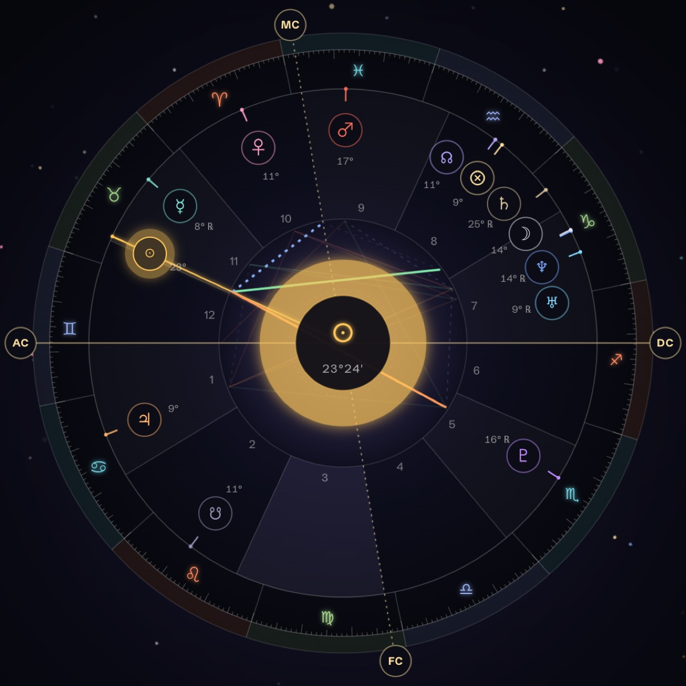
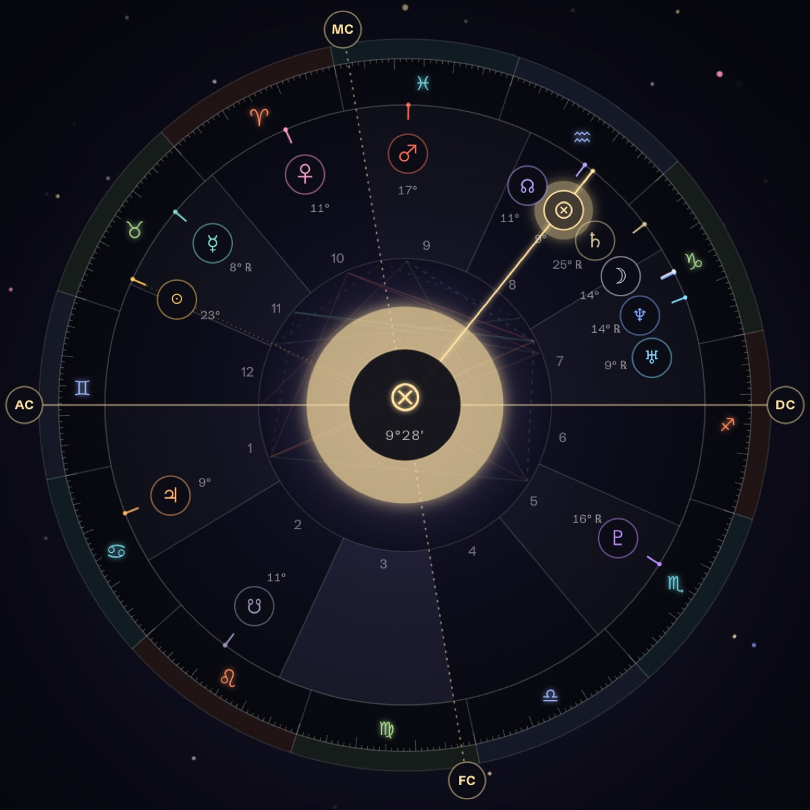
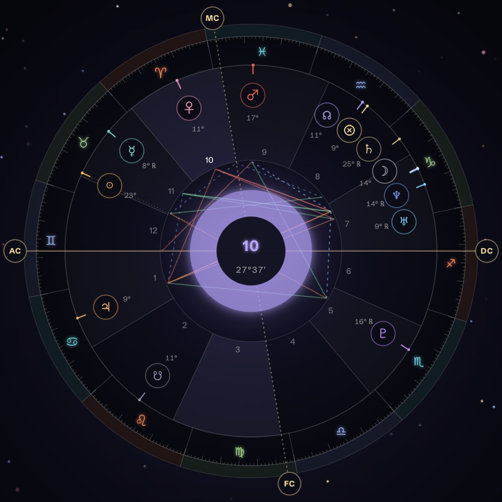
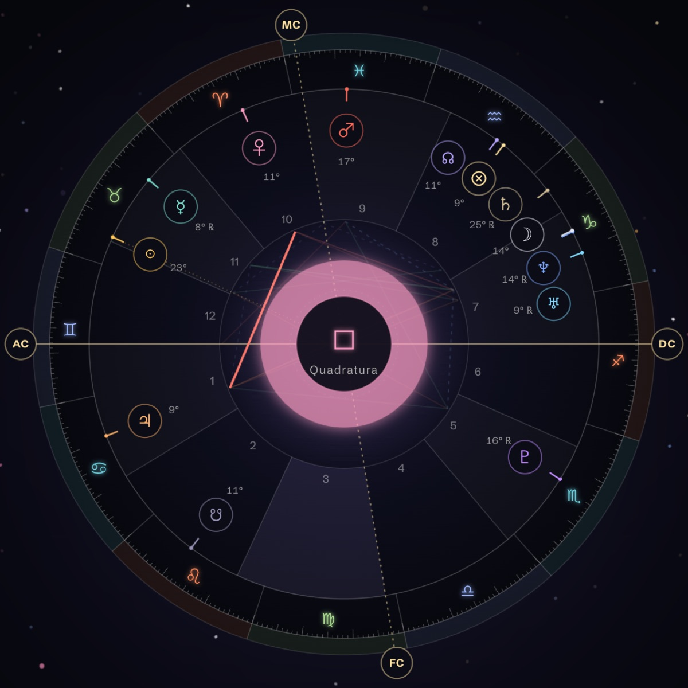
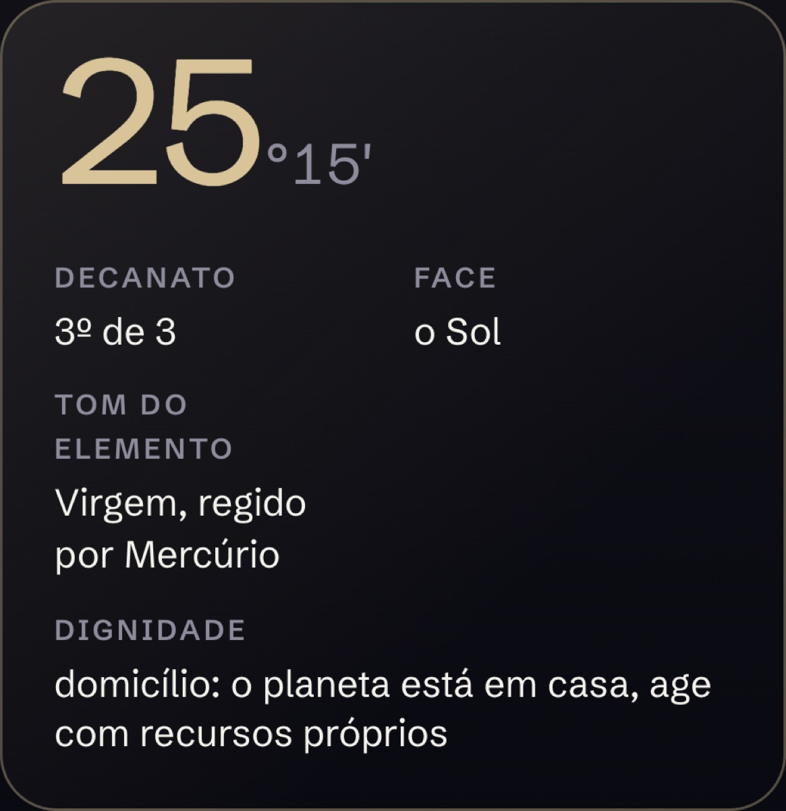
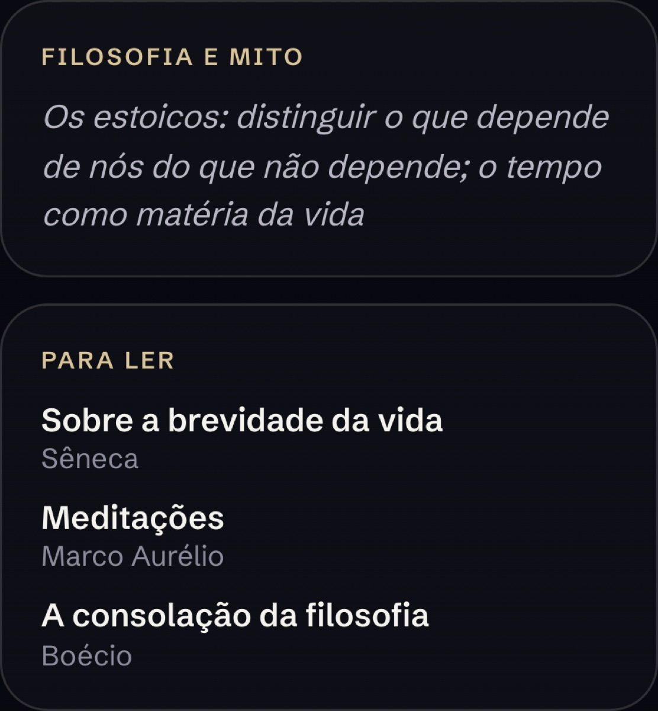

Lançamento · Leitura viva do mapa
O seu mapa fala.
Toque num planeta do seu mapa natal e ele mesmo explica, em voz alta, o que significa em você. Dez planetas, dez vozes. E também os nodos, a Roda da Fortuna, o Ascendente, as doze casas e cada aspecto.
O Sol fala de graça. O mapa inteiro abre por R$ 147, por seis meses.

Aperte e ouça
Dez planetas. Dez vozes.
Cada planeta fala com a voz do seu caráter. Saturno é grave e lento, Vênus é suave, Marte é seco, Netuno vem como névoa. São as mesmas vozes que falam dentro do seu mapa.
Aqui eles só se apresentam. No seu mapa, cada um fala por cerca de um minuto sobre onde ele está em você.
Como funciona
Você toca. Ele explica.
- Você informa quando e onde nasceuData, hora e cidade. O mapa é calculado na hora, com as casas de Placidus, os nodos e a Roda da Fortuna.
- A roda do seu mapa abre na telaCom os planetas no grau exato, as linhas do Ascendente e do Meio do Céu e as linhas de cada aspecto.
- Você toca num ponto, e ele falaEm primeira pessoa, com a voz dele, sobre o que ele é no seu mapa. O texto aparece escrito enquanto ele fala.
- E pergunta pelo céu de agoraO mesmo ponto conta o que o trânsito de hoje está mexendo nele.
O mapa inteiro fala
Toque em qualquer ponto.
Não são só os planetas. Tudo o que está na roda tem algo a dizer sobre você.



- 10 planetas
- Nodo Norte
- Nodo Sul
- Roda da Fortuna
- Ascendente
- Descendente
- Meio do Céu
- Fundo do Céu
- 12 casas
- Conjunções
- Sextis
- Quadraturas
- Trígonos
- Oposições
Mais fundo que o signo
Não é só "Saturno em Capricórnio".
Cada ponto traz as camadas que uma boa leitura traz, e liga o céu à mitologia, à filosofia e aos livros.
- Grau e decanatoO grau exato, se é o primeiro, o segundo ou o terceiro decanato, a face e o regente dele.
- DignidadeSe o planeta está em casa, exaltado, em exílio ou em queda, e o que isso muda.
- Mito e filosofiaO mito que ecoa naquele ponto e uma ideia filosófica para pensar a vida com ele.
- Um livro para lerDe Sêneca a Clarissa Pinkola Estés, escolhido para aquele planeta naquele signo.
- O céu de agoraO trânsito que está passando por ali hoje, contado pelo próprio ponto.


Abrir o mapa inteiro
Ouça o seu Sol primeiro. Depois decida.
Pagamento único. Seis meses de acesso ao seu mapa falando.
- Os dez planetas, cada um com a sua voz
- Nodos, Roda da Fortuna, Ascendente, Meio do Céu e Fundo do Céu
- As doze casas e todos os aspectos do seu mapa
- Grau, decanato, mito, filosofia e livros em cada ponto
- O céu de agora em cada ponto, durante os seis meses
Pix ou cartão pelo Mercado Pago. O link de acesso chega no seu e-mail logo depois da compra.
Perguntas
Antes de abrir.
Preciso saber a hora em que nasci?
Sim. Sem a hora não dá para calcular o Ascendente, o Meio do Céu e as casas. A certidão de nascimento costuma trazer a hora. Se ela for aproximada, a leitura dos planetas nos signos continua valendo, mas as casas podem mudar.
O que eu ouço de graça?
O seu Sol. Você vê o mapa inteiro na tela e ouve o Sol falar sobre onde ele está em você. Os outros pontos abrem com a compra.
Quem escreve o que cada planeta fala?
As falas partem dos textos do Eduardo, que lê o céu ao lado da mitologia e do simbolismo há mais de dez anos. Uma inteligência artificial monta cada fala para o seu mapa específico, a partir desses textos, e cada planeta lê com a sua voz.
Funciona no celular?
Funciona. A roda se ajusta à tela e as falas tocam no próprio navegador, sem instalar nada.
O que acontece depois de seis meses?
O acesso fecha. Se quiser continuar, compra de novo e ganha mais seis meses no mesmo mapa.
Posso abrir o mapa de outra pessoa?
Cada compra abre um mapa. Para outra pessoa, é outra compra com os dados de nascimento dela.